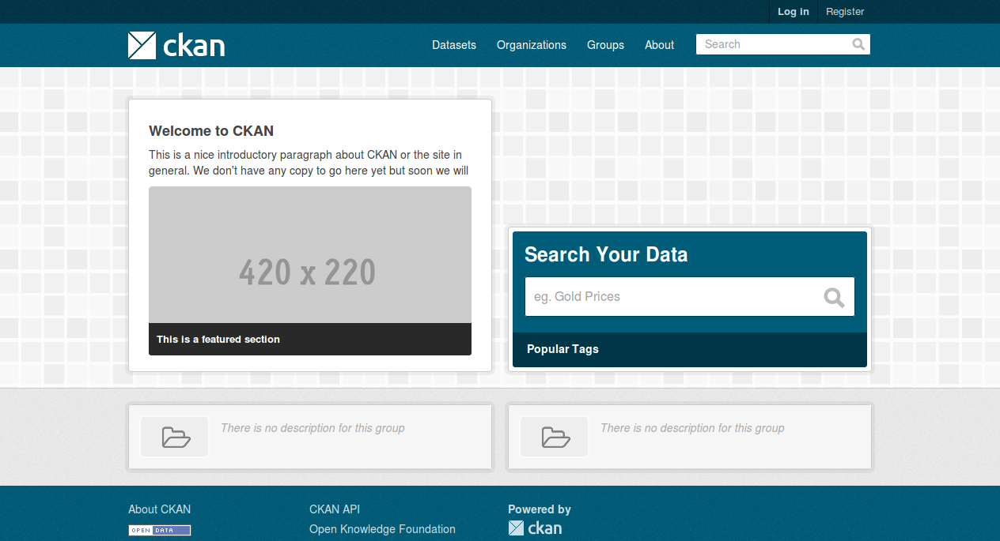

Installing CKAN from package¶
This section describes how to install CKAN from package. This is the quickest and easiest way to install CKAN, but it requires Ubuntu 14.04 64-bit or Ubuntu 12.04 64-bit. If you’re not using Ubuntu 14.04 64-bit or Ubuntu 12.04 64-bit, or if you’re installing CKAN for development, you should follow Installing CKAN from source instead.
At the end of the installation process you will end up with two running web applications, CKAN itself and the DataPusher, a separate service for automatically importing data to CKAN’s DataStore extension.
1. Install the CKAN package¶
On your Ubuntu 14.04 or 12.04 system, open a terminal and run these commands to install CKAN:
Update Ubuntu’s package index:
sudo apt-get update
Install the Ubuntu packages that CKAN requires:
sudo apt-get install -y nginx apache2 libapache2-mod-wsgi libpq5
Download the CKAN package:
On Ubuntu 14.04:
wget http://packaging.ckan.org/python-ckan_2.6-trusty_amd64.deb
On Ubuntu 12.04:
wget http://packaging.ckan.org/python-ckan_2.6-precise_amd64.deb
Note
If wget is not present, you can install it via:
sudo apt-get install wget
Install the CKAN package:
On Ubuntu 14.04:
sudo dpkg -i python-ckan_2.6-trusty_amd64.deb
On Ubuntu 12.04:
sudo dpkg -i python-ckan_2.6-precise_amd64.deb
Note
If you get the following error it means that for some reason the Apache WSGI module was not enabled:
Syntax error on line 1 of /etc/apache2/sites-enabled/ckan_default: Invalid command 'WSGISocketPrefix', perhaps misspelled or defined by a module not included in the server configuration Action 'configtest' failed. The Apache error log may have more information. ...fail!
You can enable it by running these commands in a terminal:
sudo a2enmod wsgi sudo service apache2 restart
2. Install PostgreSQL and Solr¶
Tip
You can install PostgreSQL, Solr and CKAN on different servers. Just change the sqlalchemy.url and solr_url settings in your /etc/ckan/default/production.ini file to reference your PostgreSQL and Solr servers.
Install PostgreSQL and Solr, run this command in a terminal:
sudo apt-get install -y postgresql solr-jetty
The install will whirr away, then towards the end you’ll see this:
* Not starting jetty - edit /etc/default/jetty and change NO_START to be 0 (or comment it out).
Follow the instructions in 5. Setup Solr to setup Solr.
Follow the instructions in 3. Setup a PostgreSQL database to setup PostgreSQL, then edit the sqlalchemy.url option in your /etc/ckan/default/production.ini file and set the correct password, database and database user.
3. Update the configuration and initialize the database¶
Edit the CKAN configuration file (/etc/ckan/default/production.ini) to set up the following options:
- site_id
Each CKAN site should have a unique site_id, for example:
ckan.site_id = default
- site_url
Provide the site’s URL. For example:
ckan.site_url = http://demo.ckan.org
Initialize your CKAN database by running this command in a terminal:
sudo ckan db init
Optionally, setup the DataStore and DataPusher by following the instructions in DataStore extension.
Also optionally, you can enable file uploads by following the instructions in FileStore and file uploads.
4. Restart Apache and Nginx¶
Restart Apache and Nginx by running this command in a terminal:
sudo service apache2 restart
sudo service nginx restart
5. You’re done!¶
Open http://localhost in your web browser. You should see the CKAN front page, which will look something like this:
{kind=link}
You can now move on to Getting started to begin using and customizing your CKAN site.
Note
The default authorization settings on a new install are deliberately restrictive. Regular users won’t be able to create datasets or organizations. You should check the Organizations and authorization documentation, configure CKAN accordingly and grant other users the relevant permissions using the sysadmin account.